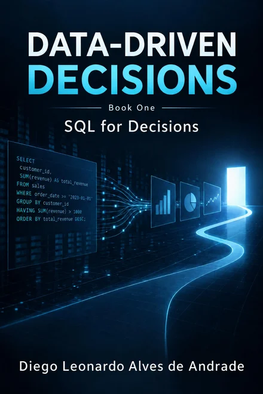

Books
I have written five books: a trilogy in English on making decisions with data, and two books in Portuguese, one on business and one that covers the whole of data science.
ENIn EnglishData-Driven Decisions trilogy

ENSQL for Decisions
- EN
Power BI for Decisions
 EN
ENPython for Decisions

SQL for Decisions
Data-Driven Decisions, Book One
Book 1 of the trilogy
How to turn a real decision into a question a database can answer, and the answer into something a person can defend in a meeting. The syntax is ordinary; the book teaches the habit around it: counting honestly, doubting the source and building the query in service of the decision.
A query that runs is easy.
Chapters (10)
- The Decision Behind the Query
- Counting Honestly
- Trusting the Source
- Joining Tables Into a Question
- Reusable Logic With CTEs
- Ranking and Trends With Window Functions
- Turning Queries Into Models With dbt
- Performance When the Data Grows
- The SQL Decision, End to End
- Worked Build, Query by Query
Power BI for Decisions
Data-Driven Decisions, Book Two
Book 2 of the trilogy
Carries the SQL answer into a report that someone who did not write the query can open, navigate and act on. The focus is the judgment around the buttons: what the report must say before the first visual, the model that makes hard questions easy, and the honesty that separates a report that clarifies from one that flatters.
A report is only as honest as the data behind it.
Chapters (10)
- Shaping Data With Power Query
- The Star Schema
- Measures That Mean Something
- Filter Context, the Idea Behind DAX
- The Chart Catalog as a Method
- Tables That Decide
- Designing the Message in Figma
- Telling the Story and Not Lying
- Refreshing and Sharing at Scale
- Worked Build, Wireframe to Published
Python for Decisions
Data-Driven Decisions, Book Three
Book 3 of the trilogy
Reaches for Python when the decision needs something neither a query nor a report provides: open exploration, a statistical test, a projection. The notebook is read as an argument, a distribution is examined before a mean is trusted, and a relationship is tested before anyone acts on it.
A notebook read as an argument.
Chapters (10)
- The Notebook as a Decision Journal
- Cleaning and Reshaping With pandas
- Distributions and Segments
- Relationships and Correlation
- Is It Real? Significance and Confidence
- Time Series and Seasonality
- Projection and Scenarios
- Charts That Carry an Argument
- The Python Decision, End to End
- Worked Build, A Full Analysis, Cell by Cell
One decision, three tools
All three books solve the same case, each with its own tool. A product line earns 180k, ranks 47th of 50 and costs 171k to carry. The supply contract has 8 months left and charges a penalty for leaving early. Keep it, cut it now, or wind it down when the contract ends?
SQL for Decisions, chapter 9
WITH line_sales AS (
SELECT product_line, SUM(quantity*unit_price) AS revenue
FROM stg_sales
WHERE sale_date >= '2023-07-01'
GROUP BY product_line
),
line_cost AS (
SELECT product_line, SUM(loaded_cost) AS cost
FROM stg_costs GROUP BY product_line
)
SELECT s.product_line, s.revenue, c.cost,
s.revenue - c.cost AS margin
FROM line_sales s
LEFT JOIN line_cost c USING (product_line)
ORDER BY margin;Shows that 47th place is about revenue, not profit: the line costs 171k and still leaves a 9k margin.
Power BI for Decisions, chapter 10
Margin % = DIVIDE ( [Revenue] - [Cost], [Revenue] )Puts the margin on a card any manager can read: 5.0%, thin but still positive.
Python for Decisions, chapter 9
t_stat, p_val = stats.ttest_ind(margin_pct[:6], margin_pct[6:])
print(f"p = {p_val:.3f}")p = 0.297: the drop from 5.28% to 4.86% between halves may be chance. In the scenarios to the end of the contract the margin stays between 4.07% and 5.87%, always positive, so the penalty does not pay off.
The recommendation across the three books: do not pay the penalty. Stop restocking, wind the line down when the contract ends, and review the trend until then.
The method, in the projects
The trilogy teaches five steps. Each one shows up in a project on this site.
Name the decision
Train a model or pay for an API? The question comes before the code, and the answer is a monthly volume from which the numbers change.
Trust the data
Every batch passes five checks before it reaches the dashboard; if it fails, the dashboard keeps the last good data.
Show the work
Every answer cites the passage it came from, and the citation is checked before it goes out.
Read the trend
Before and after the congestion fee, with the warning that part of the change may be seasonal.
Make it last
Every change is tested against recorded calls, and a regression is stopped before it ships.
Anotações sobre Negócios (Notes on Business)
Reflexões práticas para gerenciar, liderar e fazer acontecer
Eight chapters on what separates people who turn an idea into a business from those who only try: validating the problem before the solution, positioning against competitors, leading teams, selling, spotting your own biases when deciding, and understanding why giant companies fall.
O que separa quem transforma uma ideia em negócio de verdade de quem apenas tenta?
Chapters (8)
- Mentalidade e visão
- Validação do problema
- Estratégia competitiva e posicionamento
- Inovação e desenvolvimento de produto
- Liderança e gestão de alta performance
- Vendas, influência e persuasão
- Vieses cognitivos e tomada de decisões
- Escala, inovação e o porquê da queda dos gigantes
O Cânone da Ciência de Dados Moderna (The Canon of Modern Data Science)
Territórios e fundamentos
A complete map of the craft, from Python and statistics to transformers, MLOps and career, written to fill the gap between the translated textbook that is too dense and the tutorial that is too shallow. Seven parts, nineteen chapters and a full project in the appendix.
Que o tempo investido aqui sirva ao trabalho que vem em seguida.
The Cânone, mapped
The book's seven parts, at the real share of its 1,042 pages each one takes. Open a part to see its chapters (titles in Portuguese).
IThe foundation O Alicercep. 11–231
- 1A filosofia e o mindset do cientista de dadosp. 11
- 2Python essencial e manipulação de arquivosp. 60
- 3Matemática fundamental para deep learningp. 127
- 4Excel e sua prática avançadap. 191
IIThe statistical core O Coração Estatísticop. 232–435
- 5Análise exploratória de dados e visualização científicap. 232
- 6Probabilidade e distribuiçõesp. 319
- 7Pensamento bayesianop. 355
- 8Inferência causal e experimentaçãop. 398
IIIData engineering Engenharia de Dadosp. 436–667
- 9Engenharia de dados, com bancos de dados na prática: PostgreSQL e MongoDBp. 436
- 10Fluxo canônico de machine learning e regressãop. 534
- 11Classificação clássica, árvores e florestas, com AutoML em profundidadep. 586
IVSupervised and unsupervised machine learning Machine Learning Supervisionado e Não Supervisionadop. 668–802
- 12Não supervisionado e sistemas de recomendaçãop. 668
- 13Séries temporais, com análise prescritiva e otimizaçãop. 720
VNeural networks and the AI frontier Redes Neurais e a Fronteira da IAp. 803–946
- 14Aprendizado profundop. 803
- 15Visão computacional e redes convolucionaisp. 840
- 16Redes recorrentes e transformersp. 874
- 17Modelos generativos e deep reinforcement learningp. 910
VIData systems at scale and model operations Sistemas de Dados em Escala e Operação de Modelosp. 947–990
- 18Big data, stream processing e MLOpsp. 947
VIICommunication, management and career Comunicação, Gestão e Carreirap. 991–1,027
- 19Comunicação, gestão e carreirap. 991
- AAppendix: a complete data science project Apêndice: Projeto Completo de Data Sciencep. 1,028–1,042